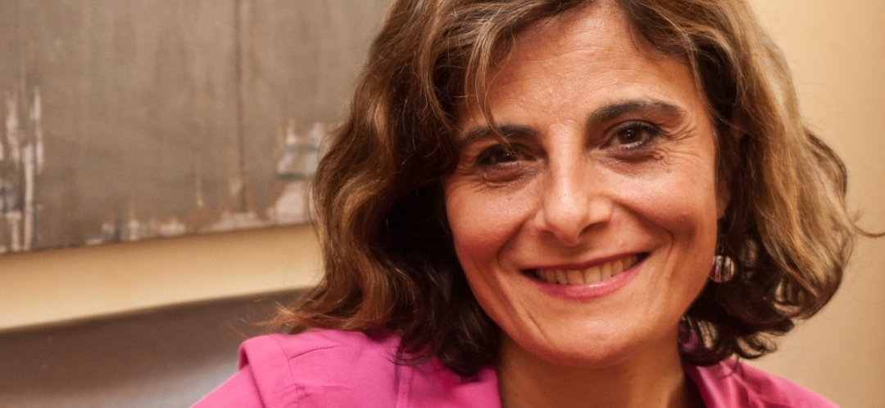
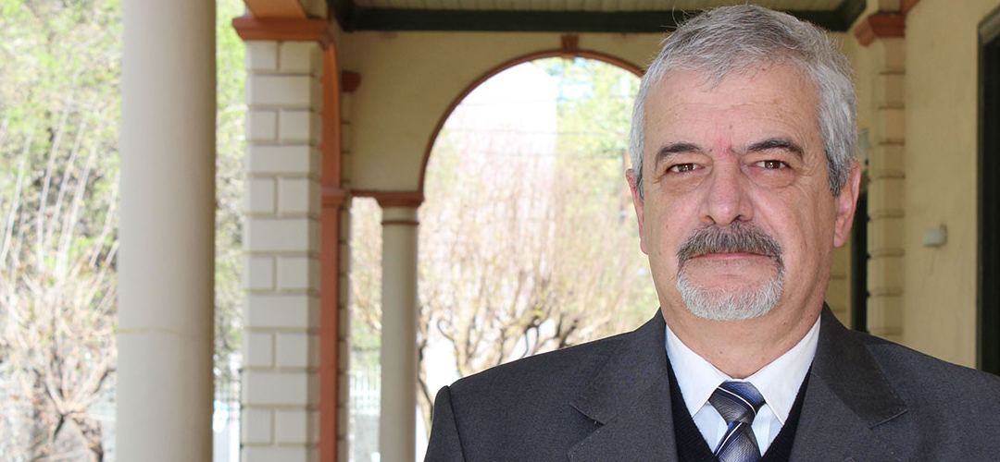
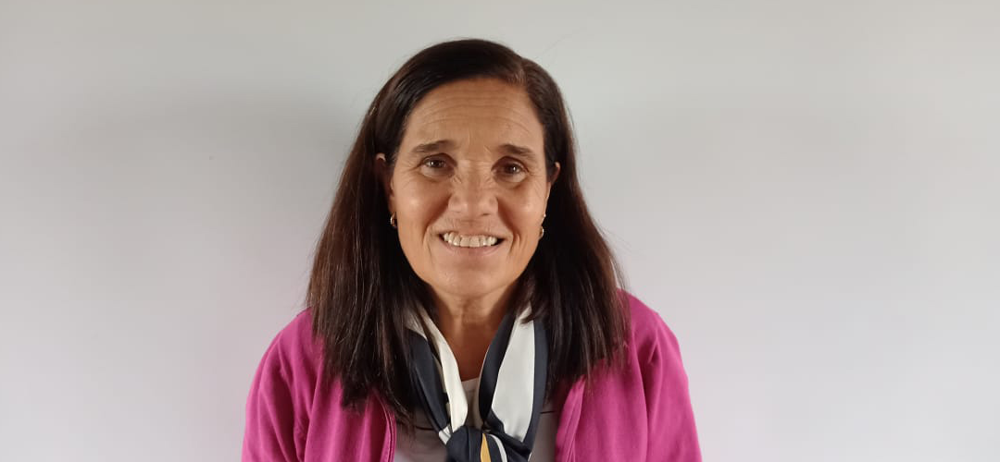

Escribir en la universidad como una forma de conversación
Emilio Moyano
03/05/2024
3 min de lectura
“El nivel de aprendizaje e innovación que esta situación está creando es...
Joel Armando
25/04/2024
5 min de lectura

Diez claves para una defensa oral de tesis exitosa
Florencia Corsánigo
18/04/2024
6 min de lectura
“En esa dialéctica… aprender y desaprender se mueve la formación...
Francisco Imbernón
11/04/2024
10 min de lectura

La importancia de la oralidad en el desempeño profesional
Maria Ruiz Juri
05/04/2024
5 min de lectura

“El rol docente se revela fundamental porque es quien va trazando las...
Eva Da Porta
21/03/2024
6 min de lectura

Calidez y competencia en la gestión de la enseñanza
Tasha Sofía Vignau
14/03/2024
2 min de lectura

“La tarea de docentes y alumnos ha sido titánica durante la pandemia”
Eduardo Bavio
07/03/2024
5 min de lectura

Y sí… hoy, más que nunca, hablemos de educación
Maria Helena Saddi
29/02/2024
7 min de lectura

“Los niños aprenden a través del movimiento, de la experiencia con lo...
Aída Lozano
22/02/2024
8 min de lectura

Inicia la Maestría en Gestión de la Educación en Entornos Digitales...
Cecilia Flood
15/02/2024
3 min de lectura
“Una de las cosas básicas a mejorar en los institutos y en nuestro día a día...
Alejandro Galan Martin
08/02/2024
1 min de lectura